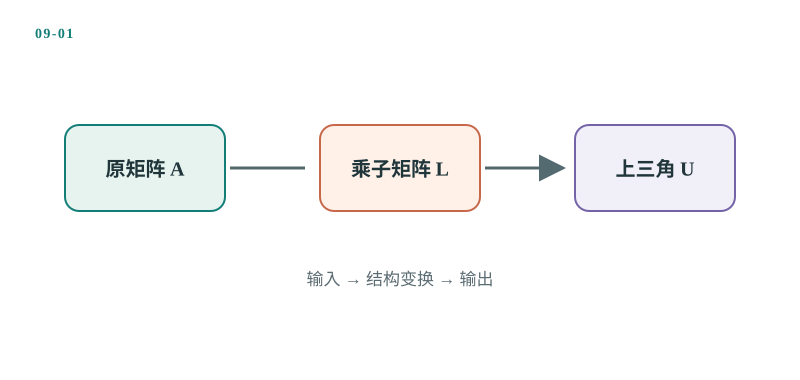
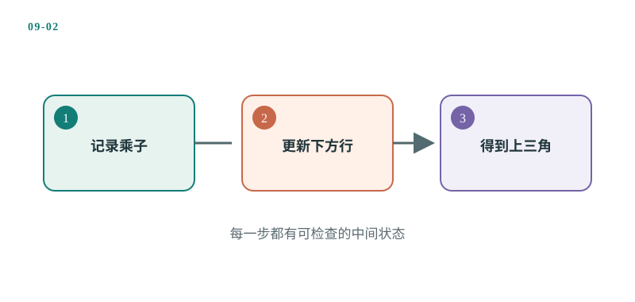
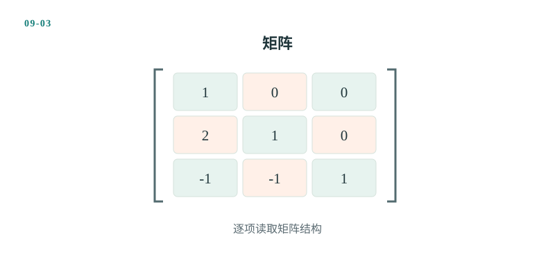
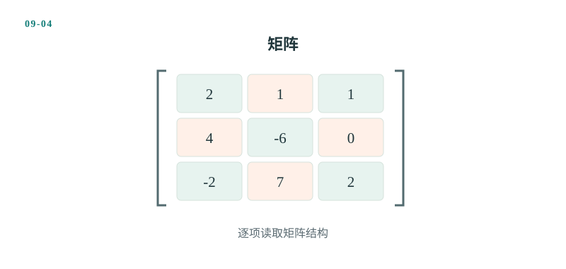
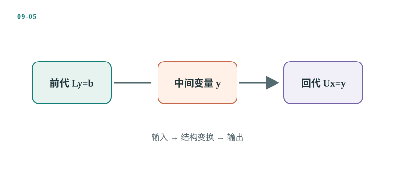
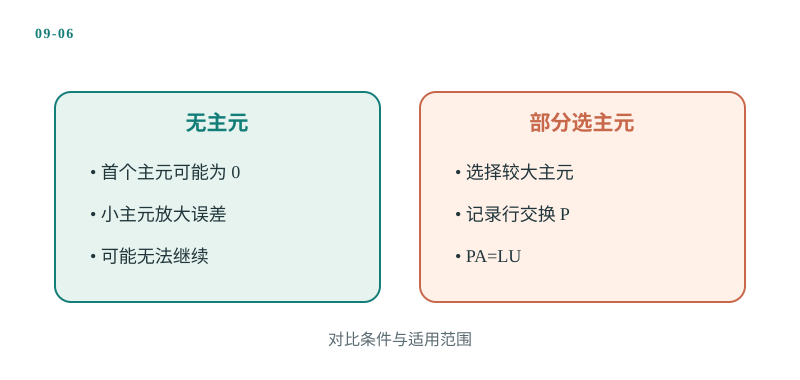
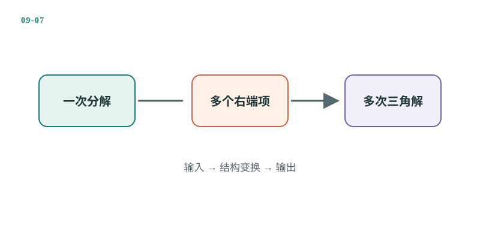
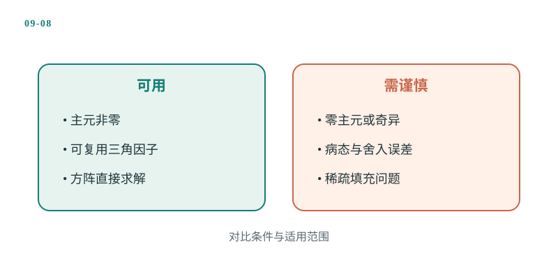

LU 分解：把消元过程装进两个矩阵
高斯消元不只是把方程化成上三角。每一步消元都可以记录成一个下三角矩阵；把这些步骤合起来，就得到 A = LU。
01从一次消元到可重复使用的结构
解 Ax=b 时，高斯消元把 A 变成上三角矩阵 U。每次用主元行消去下面的元素，都会产生一个乘子；这些乘子恰好能组成下三角矩阵 L。
因此 LU 分解不是另一种神秘算法，而是把消元过程压缩保存。A=LU：L 记录消元乘子，U 保存消元后的上三角结构。

02乘子为什么落在 L 的下三角
用第一列主元 a₁₁ 消去 a₂₁，需要把第二行减去 l₂₁ 倍第一行，其中 l₂₁=a₂₁/a₁₁。继续处理第二列时，新的乘子 l₃₂ 被放到 L 的 (3,2) 位置。
在不交换行、且主元非零的标准消元中，L 的对角线取 1；L 保存的是每一步消元的乘数，而不是消元后的行。

03一个可手算的 3×3 例子
取 A=[[2,1,1],[4,−6,0],[−2,7,2]]。第一步用 2 作主元，乘子分别为 2 和 −1；第二步主元为 −8，第三行乘子为 −1。消元后得到 U=[[2,1,1],[0,−8,−2],[0,0,1]]。
将乘子放入 L 的严格下三角、并令对角线为 1，得到 L=[[1,0,0],[2,1,0],[−1,−1,1]]。每个数字都能回溯到具体的一次行消元。

A=[[2,1,1],[4,-6,0],[-2,7,2]]
L=[[1,0,0],[2,1,0],[-1,-1,1]]
U=[[2,1,1],[0,-8,-2],[0,0,1]]04不要相信图形：把 L 和 U 乘回去
真正的验证是矩阵乘法。L 的第一行直接给出 U 第一行；第二行等于 2 倍 U 第一行加 U 第二行；第三行等于 −1 倍第一行、−1 倍第二行，再加第三行。逐行相加，恰好恢复 A。
看起来像三角形的两个矩阵，并不自动构成原矩阵的分解。必须检查 LU=A，或用独立程序计算残差 ‖A−LU‖。

05解方程时，为什么要先前代再回代
由 Ax=b 和 A=LU，得到 L(Ux)=b。令 y=Ux，就先解 Ly=b；因为 L 是下三角矩阵，可以从第一行开始逐个求 y。再解 Ux=y；因为 U 是上三角矩阵，从最后一行向上回代。
对本例取 b=(5,−2,9)，前代得到 y=(5,−12,2)，回代得到 x=(1,1,2)。代回原方程，Ax=(5,−2,9)，验证了求解流程。

06主元为零时：置换矩阵登场
不是每个矩阵都能按当前行顺序直接得到 LU。第一主元为 0 时，乘子会除以 0；主元很小时，也可能放大舍入误差。部分选主元法会在当前列选择绝对值最大的候选行并交换。
把行交换记录成置换矩阵 P，分解形式变为 PA=LU。P 明确记录行顺序变化；使用时必须确认教材采用的置换约定。

07交互：改变右端项，重复使用同一个 LU
固定 A、L、U，只改变 b 的第一个分量。交互区重新执行前代和回代，而不会重新分解 A。这个例子让“分解一次、求解多次”的计算结构变得可见。
当右端项有很多列时，可把多个 b 组成矩阵 B，一次求解 LY=B 与 UX=Y。

LU 求解器
固定示例矩阵，拖动 b₁，观察前代与回代得到的新解。
x=(1,1,2)
Ly=b → Ux=y
08LU 的适用边界与自测
标准无主元 LU 的存在与主元顺序有关；对一般矩阵，带部分选主元的 PA=LU 更稳妥。若矩阵奇异，某一步可能没有非零主元，不能假装得到可逆的三角因子。
LU 适合方阵线性系统的重复求解、行列式计算和某些直接法。稀疏矩阵还要考虑消元中的 fill-in 与排序策略。

自测与思考
对 A=[[0,2],[1,3]]，为什么不能直接用第一行作为首个主元？先交换两行，再写出 P、L、U。
延伸阅读与来源
本篇数值例子为独立构造的教学样例；下列课程与教材用于核对定义、定理条件和算法边界。
- MIT 18.06 · Factorization into A = LU。消元矩阵、置换矩阵与 LU 分解。
- Gilbert Strang · Introduction to Linear Algebra。LU、PA=LU 与分解条件。